электронный ресурс по учебной дисциплине 1-58 01 01 - "Инженерно-психологическое обеспечение информационных технологий"
|
||
| Оглавление | Программа | Теория | Практика | Контроль знаний | Об авторах | ||
| Практика
ЛАБОРАТОРНАЯ РАБОТА № 6 Исследование усилительных каскадов
1. Цель работы 1. Изучить характеристики и параметры усилительных каскадов, а также режимы работы и способы задания рабочей точки активных элементов в усилителях. 2. Экспериментально исследовать основные характеристики и параметры одиночных усилительных каскадов.
2. Теоретические сведения
Усилителем электрических сигналов называется устройство, предназначенное для увеличения мощности сигнала, поданного на его вход. Процесс усиления основан на преобразовании активным элементом (биполярным, полевым транзистором) энергии источника постоянного напряжения в энергию переменного напряжения на нагрузке при изменении сопротивления активного элемента под действием входного сигнала. Усилители сигналов являются базовыми устройствами для построения сложных аналоговых электронных устройств. В зависимости от того, какой электрод транзистора является общим для входной и выходной цепей, различают три схемы включения для биполярных (БТ) и полевых транзисторов (ПТ) соответственно: с общей базой или общим затвором (ОБ или ОЗ); с общим эмиттером или общим истоком (ОЭ или ОИ); общим коллектором или общим стоком (ОК или ОС). Работа усилительных устройств описывается рядом параметров и характеристик. Коэффициент усиления, или коэффициент передачи, – отношение амплитуды выходного сигнала к амплитуде входного в установившемся режиме при гармоническом входном сигнале. Сигнал может описываться напряжением, током или мощностью, поэтому различают: 1. Коэффициент усиления по напряжению 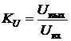. 2. Коэффициент усиления по току
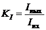. 3. Коэффициент усиления по мощности 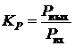. Для многокаскадных усилителей коэффициент усиления определяется произведением коэффициентов усиления отдельных каскадов, выраженных в абсолютных единицах: (раз) или суммой коэффициентов усиления, выраженных в децибелах: (дБ). Входное сопротивление усилителя (полное или резистивное Rвх) представляет собой сопротивление между входными зажимами усилителя и определяется отношением амплитуды входного напряжения к амплитуде входного тока: 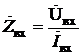. Характер входного сопротивления зависит от диапазона усиливаемых частот. Выходное сопротивление (полное или резистивное Rвых) определяют между выходными зажимами при отключенном сопротивлении нагрузки как отношение амплитуды выходного напряжения к амплитуде выходного тока: 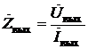. Коэффициент демпфирования – отношение сопротивления нагрузки к выходному сопротивлению усилителя: 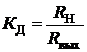. Значение этого параметра лежит в пределах от 10 до 100. Выходная мощность – мощность гармонического сигнала на выходе усилителя при работе на расчетную нагрузку и заданном коэффициенте гармоник или нелинейных искажений: 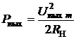. Коэффициент полезного действия (КПД) – отношение выходной мощности, отдаваемой усилителем в нагрузку, к общей мощности, потребляемой от источника питания: . Чувствительность (номинальное входное напряжение) – амплитуда напряжения сигнала, который нужно подать на вход усилителя, чтобы получить на выходе сигнал с заданной мощностью. Динамический диапазон – отношение наибольшего допустимого значения входного напряжения к его наименьшему допустимому значению: 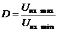. Диапазон усиливаемых частот (полоса пропускания) – разность между верхней и нижней граничными частотами: , в которой коэффициент усиления изменяется по определенному закону с заданной точностью. Коэффициент гармоник оценивает нелинейные искажения усилителя в процентах: , где P1, P2, …, Pn – мощности гармонических составляющих выходного сигнала (nf1) при синусоидальном входном сигнале частотой f1. Источником нелинейных искажений являются нелинейность вольт-амперных характеристик (ВАХ) активных элементов усилителя, а также ограниченное значение напряжения питания. Это приводит к искажению формы сигнала и появлению высших гармонических составляющих в спектре выходного сигнала при действии на входе гармонического сигнала. Линейные искажения определяются зависимостями параметров транзисторов от частоты и реактивными элементами усилительных устройств. Линейные искажения бывают трех видов: частотные, фазовые и переходные. Амплитудная характеристика (АХ) – это зависимость амплитуды (или действующего значения) напряжения первой гармоники выходного сигнала от амплитуды (или действующего значения) напряжения гармонического входного сигнала (рис. 1). Для идеального усилителя АХ линейна и проходит через начало координат (штриховая линия), наклон характеристики к оси абсцисс определяется коэффициентом усиления: 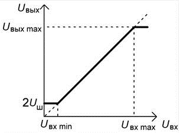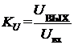.
Рис. 1. Амплитудная характеристика Минимальной амплитудой напряжения входного сигнала следует считать такое ее значение, при котором амплитуда напряжения выходного сигнала в два раза превышает амплитуду напряжения шумов на выходе усилителя. Максимальная амплитуда напряжения входного сигнала ограничивается допустимым уровнем коэффициента гармоник. 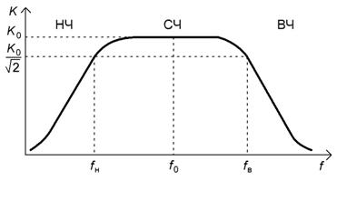Амплитудно-частотная характеристика (АЧХ) определяет зависимость модуля коэффициента усиления от частоты гармонического сигнала на входе усилителя. На рис. 2 представлена типичная АЧХ резистивного усилителя.
Рис. 2. АЧХ резистивного усилителя 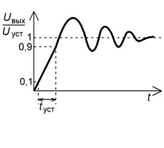Измерение АЧХ проводят при фиксированном уровне входного сигнала, соответствующем линейному участку АХ, обычно . Поскольку полоса пропускания резистивных усилителей лежит в пределах нескольких декад, то при построении ее графика используется логарифмический масштаб по оси частот.
Рис. 3. Переходная характеристика В усилительном каскаде при отсутствии входного сигнала устанавливаются постоянные значения токов и напряжений, которые определяют статический режим работы (режим по постоянному току или режим покоя) транзистора. Значения постоянных токов и напряжений определяются напряжениями источника (источников) питания и сопротивлениями нагрузок во входной и выходной цепях активного элемента. Соответствующая режиму покоя точка на ВАХ транзистора называется рабочей точкой. Положение рабочей точки выбирается исходя из требуемого режима работы активного элемента. Режим
класса А.
В данном режиме ток в выходной цепи активного элемента протекает в течение
всего периода входного сигнала. Положение рабочей точки выбирается таким
образом, что амплитуда переменной составляющей выходного тока Iк max,
появившегося в результате входного сигнала, не превышает ток покоя . Режим класса А характеризуется работой транзистора на линейных уча-стках ВАХ. В связи с этим нелинейные искажения сигнала минимальны (КГ ≤ 1 %). Максимальное значение КПД в этом режиме мало, для резистивного усилителя ηmax ≤ 25 %. Режим класса В. Ток в выходной цепи активного элемента протекает в течение половины периода входного сигнала. Рабочая точка на ВАХ выбирается так, что входной ток покоя равен нулю (рис. 5). При этом входной и выходной токи имеют форму импульса с углом отсечки 90°. Угол отсечки – половина части периода, выраженная в радианах или градусах, в течение которой транзистор открыт и через него протекает ток. Из-за нелинейности начального участка ВАХ активного элемента форма входного и выходного токов существенно отличается от формы, соответствующей линейному элементу (см. рис. 5). Для усиления другой полуволны входного сигнала используют еще один транзистор; такой усилитель называется двухтактным. Режим класса В характеризуется большими нелинейными искажениями сигнала (КГ ≤ 10 %), обусловленными работой на нелинейных начальных участках ВАХ транзистора и высоким КПД. Максимальный КПД достигает 70 %. Режим класса АВ. Ток в выходной цепи активного элемента протекает в течение промежутка времени больше половины периода входного сигнала. Угол отсечки достигает 120…150°. В режиме покоя транзистор приоткрыт, и через него протекает ток, равный 5…15 % максимального тока при заданном входном сигнале (рис. 6). Используется для уменьшения нелинейных искажений, присущих режиму класса В. Коэффициент гармоник уменьшается (КГ ≤ 3 %), но уменьшается и КПД за счет наличия входного тока покоя .
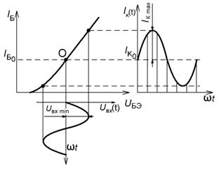 Рис. 4. Режим класса А
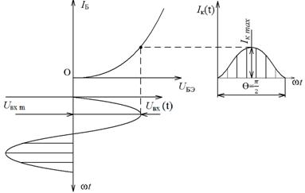
Рис. 5. Режим класса В
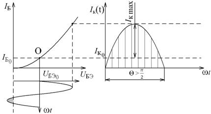
Рис. 6. Режим класса АВ 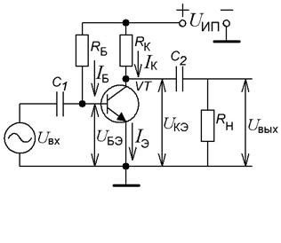Существуют различные способы задания режима работы по постоянному току. Схема с фиксированным током базы. Режим по постоянному току задается с помощью резисторов RБ, RК и источника питания UИП (рис. 7). Уравнение для входной цепи согласно второму закону Кирхгофа имеет вид:
Рис. 7. Схема с фиксированным током
базы где 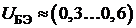 В (напряжение на открытом эмиттерном переходе кремниевого БТ), т.е. , поэтому ток в цепи базы не зависит от параметров транзистора, а определяется параметрами входной цепи. Для выходной цепи уравнение по второму закону Кирхгофа имеет следующий вид: . С учетом связи видно, что внешние элементы, задавая ток покоя базы IБ, тем самым определяют ток покоя коллектора IК. Рассмотрим принцип работы усилителя на примере простейшей схемы (см. рис. 7). Усиливаемый сигнал Uвх подается на базу транзистора через конденсатор C1 большой емкости. Выходной сигнал через конденсатор C2 большой емкости подается на нагрузку с сопротивлением RН, которой может служить следующий усилительный каскад. На рис. 8, а представлено семейство ВАХ транзистора, на котором показано положение рабочей точки, соответствующей активному режиму работы БТ. Она лежит на пересечении характеристики, соответствующей току базы 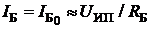, и нагрузочной прямой, которая задается уравнением . Данная прямая строится по двум точкам, одна из которых лежит на оси абсцисс (UКЭ = UИП), а другая – на оси ординат . Точка А определяет постоянные составляющие коллекторного тока и напряжения . На семействе входных характеристик (рис. 8, б) соответствующая рабочая точка находится на пересечении прямой и характеристики, соответствующей напряжению 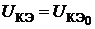. 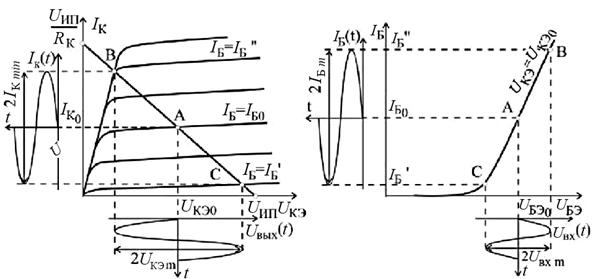
Рис. 8. ВАХ транзистора
Пусть на входе действует переменное гармоническое напряжение с низкой частотой и малой амплитудой Uвх min. Тогда рабочая точка будет перемещаться вдоль отрезка ВАС, лежащего на одной входной характеристике (см. рис. 8, б), поскольку положение входных характеристик в активном режиме слабо зависит от напряжения UКЭ. На семействе выходных характеристик (см. рис. 8, а) при отсутствии резистора нагрузки рабочая точка будет перемещаться по отрезку нагрузочной прямой, ограниченному точками В и С, которые лежат на характеристиках, соответствующих , . Поскольку амплитуды входных и выходных токов и напряжений усилителя связаны соотношениями , если , и 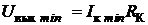, если , то коэффициент усиления по напряжению: , а коэффициент усиления по мощности . Недостатком рассмотренного способа задания рабочей точки является сильное влияние изменения температуры, параметров транзистора, напряжения питания на положение рабочей точки. При увеличении температуры растет величина h21Э, что приводит к увеличению IК, и точка покоя смещается в сторону режима насыщения. Использование в этой схеме транзисторов с параметрами, отличными от принятых при расчете, также приводит к сильному изменению положения рабочей точки. Для температурной стабилизации рабочей точки транзисторов усилительных каскадов используется отрицательная обратная связь по постоянному току или напряжению. 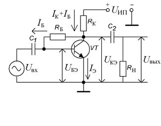Схема с коллекторной стабилизацией. На рис. 9 представлена схема с коллекторной стабилизацией, в которой резистор RБ подключается к коллектору транзистора с напряжением UКЭ, тогда
Рис. 9. Схема с коллекторной стабилизацией При повышении температуры коллекторный ток увеличивается, следовательно, коллекторное нап-ряжение UКЭ уменьшается, а значит, уменьшается ток базы IБ, что приводит к уменьшению коллекторного тока IК. Эти два фактора частично компенсируют друг друга, поэтому рабочая точка стремится вернуться в исходное положение. Схема с эмиттерной стабилизацией. Наиболее эффективной является схема с эмиттерной стабилизацией рабочей точки (рис. 10). Повышение температуры приводит к увеличению тока IК, уменьшению напряжения на коллекторе UК и увеличению эмиттерного тока . В результате увеличивается падение напряжения на резисторе RЭ. Поскольку потенциал базы транзистора 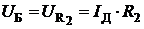 зафиксирован делителем напряжения R1, R2, то напряжение между базой и эмиттером UБЭ уменьшается: 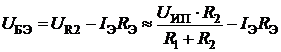, что приведет к уменьшению тока базы IБ, а значит, и коллекторного тока IК.
Рис. 10. Схема с эмиттерной
стабилизацией рабочей точки
что приводит к уменьшению коэффициента усиления каскада. 3. Методические указания по выполнению лабораторной работы Лабораторная работа выполняется с использованием Программы компьютерного моделирование электронных схем Multisim. Исследование амплитудной характеристики усилителя проводится на фиксированной частоте входного сигнала (f = 1 кГц) с использованием измерительной установки, структурная схема которой представлена на рис. 11.
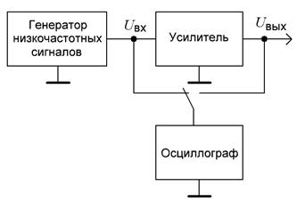
Рис. 11. Структурная схема измерительной установки
При измерении напряжений входного и выходного сигналов (рис. 12) необходимо помнить о необходимости пересчёта амплитудного напряжения в действующее по формуле 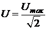 При использовании осциллографа можно измерить амплитудное значение переменного напряжения. На выходе генератора низкочастотных сигналов с помощью установки параметров «Частота» и «Амплитуда» необходимо задать сигнал частотой f = 1 кГц и амплитудой 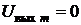. С помощью осциллографа, подключенного к выходу усилителя, измерить и рассчитать действующее напряжение шумов UШ , тогда . Увеличивая напряжение сигнала на входе усилителя, добиться такого его уровня, при котором действующее значение напряжения выходного сигнала достигнет значения . Подключить осциллограф ко входу усилителя, измерить и рассчитать Uвх min , соответствующее полученному значению Uвых min . Продолжая увеличивать напряжение сигнала на входе усилителя, добиться такого его уровня, при котором начинает искажаться форма гармонического выходного сигнала, контролируемая с помощью осциллографа. Искажение формы сигнала проявляется в виде асимметрии верхней и нижней полуволн, в ограничении верхнего или нижнего уровня сигнала и т.д. Измерить с помощью осциллографа напряжения Uвх max и Uвых max, соответствующие максимально возможному неискаженному выходному сигналу. Амплитудно-частотную характеристику исследовать при фиксированном уровне входного сигнала, выбранном на линейном участке АХ (см. рис.12). Для упрощения вычислений коэффици-ента усиления по напряжению желательно выбрать целые величины действующего значения напряжения входного сигнала. Например: 1, 5, 10 мВ. Исследуемые усилительные каскады имеют полосу пропускания в несколько декад (декада – диапазон изменения некоторой величины, на границах которого ее значения отличаются в 10 раз). Поэтому при построении графиков АЧХ необходимо по оси частот использовать логарифмический масштаб. При экспериментальном исследовании АЧХ измерения необходимо проводить в двух-трех точках на каждую декаду. Например: 100, 500, 700 Гц; 1, 5, 7 кГц и т.д. Значения нижней и верхней граничных частот (fн и fв) необходимо определять экспериментально по уменьшению уровня выходного напряжения или коэффициента усиления в раз по сравнению с их максимальными значениями в области средних частот (на частоте f = 1 кГц). Заключительным этапом исследования АЧХ является определение полосы пропускания усилителя: .
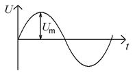
Рис. 1.12.Амплитуда сигнала
Измерения входного и выходного сопротивлений усилителя проводятся на фиксированной частоте входного сигнала (f = 1 кГц) при уровне входного сигнала, соответствующем линейному участку АХ, с использованием измерительной установки, структурная схема которой представлена на рис. 13. Входное сопротивление Rвх измеряется косвенным методом. Добавочный резистор R на входе усилителя и входное сопротивление усилительного каскада Rвх образуют делитель напряжения, для которого справедливо равенство: 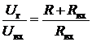, где Uг – напряжение на выходе генератора низких частот; Uвх – напряжение непосредственно на входе усилителя. Необходимо измерить напряжения Uг и Uвх (подключив осциллограф ко входу усилителя или к выходу генератора), а входное сопротивление рассчитать по формуле: 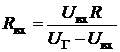
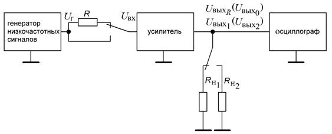
Рис. 13. Схема измерительной установки для расчёта входного и выходного сопротивлений
Если Rвх усилителя велико, измеряют выходное напряжение Uвых R при наличии добавочного резистора R, а также при его отсутствие ‑ Uвых 0 (рис. 12). В этом случае входное сопротивление рассчитывается по формуле: . При выполнении лабораторной работы рекомендуется использовать в качестве добавочного резистор с сопротивлением R=1 кОм. Выходное
сопротивление Rвых также измеряется косвенным методом,
согласно которому проводятся измерения выходных напряжений Uвых 1
и Uвых 2 при двух известных сопротивлениях нагрузки RН 1 и RН 2
соответственно. Значение выходного сопротивления рассчитывается по формуле
Рис.
10 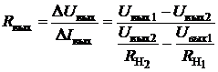. Если (режим холостого хода (ХХ) по выходу), то:
где Uвых 1 – напряжение выходного сигнала в режиме ХХ; Uвых 2 – напряжение выходного сигнала при подключенной нагрузке сопротивлением RН 2 (см. рис. 13). При выполнении работы рекомендуется использовать нагрузку с сопротивлением RН 2 = 1 кОм.
4. Порядок выполнения работы
Задание 1: Исследовать основные характеристики и параметры уси-лительного каскада на биполярном транзисторе с ОЭ, рабочая точка которого задается схемой эмиттерной стабилизации. Алгоритм выполнения работы: 1. Собрать усилительный каскад по схеме, приведенной на рис. 10, используя следующие значения параметров элементов схемы: VT – КТ315Б, R1 = 9,1 кОм, R2 = 1,5 кОм, RК = 1 кОм, RЭ = 100 Ом, C1 = 10 мкФ, C2 = 4,7 мкФ, CЭ = 100 мкФ, RН = ∞, UИП = 10 В. При выполнении всех последующих пунктов задания 1 проводятся исследования усилителя с приведенными значениями параметров элементов, если не оговорены другие значения. 2. При отключенном источнике входного сигнала измерить с помощью вольтметра постоянные напряжения UК, UЭ и UБ. Рассчитать ток покоя коллектора и напряжения UКЭ, UБЭ. 3. Подключить измерительные приборы (генератор низкочастотных сигналов, осциллограф) согласно схеме, предаставленной на рис. 11. Экспериментально исследовать АХ усилителя для синусоидального входного сигнала частотой f = 1 кГц для двух значений сопротивления нагрузки: а) ; б) . Рассчитать коэффициент усиления по напряжению для линейных участков АХ и определить динамический диапазон усилителя с различной нагрузкой. Сравнить полученные результаты. Как влияет изменение сопротивления нагрузки на коэффициент усиления по напряжению и динамический диапазон усилителя? 4. Используя методику, предложенную в подразд. 1.3, экспериментально исследовать АЧХ усилителя для двух значений емкости разделительного конденсатора C1: а) C1 = 10 мкФ; б) C1 = 4,7 мкФ. Определить полосу пропускания усилителя для двух значений емкости разделительного конденсатора. Сравнить полученные результаты. Как влияет изменение емкости разделительного конденсатора на АЧХ усилителя? 5. Подключить измерительные приборы (генератор низкочастотных сигналов, осциллограф согласно схеме, приведенной на рис. 11). Используя методику, предложенную в подразд. 1.3, измерить входное Rвх и выходное Rвых сопротивления усилителя на частоте входного сигнала f = 1 кГц, установив амплитуду входного сигнала Uвх, соответствующую линейному участку АХ. 6. Рассчитать величину коэффициента усиления по мощности KP по известным значениям Uвх m и Uвых m (см. результаты исследования АЧХ) на частоте f = 1 кГц с использованием выражения: . Задание 2: Экспериментально исследовать влияние величины статичес-кого коэффициента передачи по току в схеме с ОЭ h21Э на рабочую точку БТ для трех способов задания рабочей точки: в схеме с фиксированным током базы; в схеме с коллекторной стабилизацией; в схеме с эмиттерной стабилизацией. 2.1. Собрать усилительный каскад по схеме с фиксированным током базы, приведенной на рис. 7, используя следующие значения параметров элементов схемы: VT – КТ201А, RБ = 68 кОм, RК = 1 кОм, C1 = 10 мкФ, C2 = 4,7 мкФ, RН = ∞; UИП = 10 В. 2.1.1. Выполнить измерения постоянных напряжений UКЭ и UБЭ. 2.1.2. Заменить транзистор на КТ315Б. Повторить измерения постоянных напряжений UКЭ и UБЭ. 2.1.3. Рассчитать значения постоянных токов коллектора IК и базы IБ для двух транзисторов: , . 2.1.4. Вычислить значения параметра h21Э для двух транзисторов: . 2.1.5. Полученные данные свести в табл. 1. Таблица 1
2.1.6. Определить изменения напряжения UКЭ и тока IК при смене транзистора: ; . 2.2. Собрать усилительный каскад по схеме с коллекторной стабилизацией, приведенной на рис. 9, используя следующие значения параметров элементов схемы: VT – КТ201А, RБ = 30 кОм, RК = 1 кОм, C1 = 10 мкФ, C2 = 4,7 мкФ, RН = ∞; UИП = 10 В. 2.2.1. Выполнить измерения постоянных напряжений UКЭ и UБЭ. 2.2.2. Заменить транзистор на КТ315Б. Повторить измерения постоянных напряжений UКЭ и UБЭ. 2.2.3. Рассчитать значения постоянных токов коллектора IК и базы IБ для двух транзисторов: , . 2.2.4. Вычислить значения параметра h21Э для двух транзисторов: . 2.2.5 Полученные данные свести в табл. 2. Таблица 2
2.2.6. Определить изменения напряжения UКЭ и тока IК при смене транзистора: ; . 2.3. Собрать усилительный каскад по схеме с эмиттерной стабилизацией, приведенной на рис. 10, используя следующие значения параметров элементов схемы: VT – КТ201А, R1 = 9,1 кОм, R2 = 1,5 кОм, RК = 1 кОм, RЭ = 100 Ом, C1 = 10 мкФ, C2 = 4,7 мкФ, CЭ = 100 мкФ, RН = ∞; UИП = 10 В. 2.3.1. Выполнить измерения постоянных напряжений UК, UБ и UЭ. 2.3.2. Заменить транзистор на КТ315Б. Повторить измерения постоянных напряжений UК, UБ и UЭ. 2.3.3. Рассчитать значения постоянных токов коллектора IК для двух транзисторов: . 2.3.4. Полученные данные свести в табл. 3. Таблица 3
2.3.5. Определить изменения напряжения UКЭ и тока IК при смене транзистора: ; . 2.3.6. Сравнить изменения напряжения UКЭ и тока IК при смене транзистора для трех способов задания рабочей точки. В какой схеме лучше стабилизируется рабочая точка транзистора? 2.4. Экспериментально исследовать влияние последовательной отрицательной обратной связи (ОС) по переменному току на коэффициент усиления по напряжению KУ , ширину полосы пропускания ∆f , входное Rвх и выходное Rвых сопротивление усилителя. 2.4.1. Собрать усилительный каскад по схеме с эмиттерной стабилизацией, приведенной на рис. 10, используя следующие значения параметров элементов схемы: VT – КТ201А, R1 = 9,1 кОм, R2 = 1,5 кОм, RК = 1 кОм, RЭ = 100 Ом, C1 = 10 мкФ, C2 = 4,7 мкФ, CЭ = 100 мкФ, RН = ∞; UИП = 10 В. 2.4.2. Подключить измерительные приборы согласно схеме, приведенной на рис. 11. На частоте входного сигнала f =1кГц, для линейного участка амплитудной характеристики усилителя при амплитуде (действующем значении) входного сигнала Uвх =5мВ провести измерения коэффициента усиления по напряжению KU , а также нижней fн и верхней fв граничной частоты усилителя. 2.4.3. Измерить амплитуду (действующее значение) выходного сигнала Uвых и рассчитать коэффициент усиления по напряжению: . 2.4.4. Уменьшая (увеличивая) частоту входного сигнала, определить значение нижней fн (верхней fв) граничной частоты, т.е. значение частоты входного сигнала при которой величина амплитуды (действующего значения) выходного сигнала уменьшается в раз. Рассчитать значение ширины полосы пропускания усилителя: . 2.4.5. Подключить измерительные приборы согласно схеме, приведенной на рис. 12. На частоте входного сигнала f =1кГц для линейного участка амплитудной характеристики усилителя при амплитуде (действующем значении) входного сигнала Uвх =5мВ провести измерения входного и выходного сопротивлений усилителя. 2.4.6. Ввести в схему (см. рис. 10) последовательную отрицательную обратную связь по переменному току CЭ = 0 мкФ. Повторить выполнение пп. 2.2 – 2.3. 2.4.7. Результаты измерений и расчетов внести в табл. 4 и 5. Таблица 4
Таблица 5
2.4.8. Сравнить значения коэффициента усиления по напряжению KU , нижней fн и верхней fв граничных частот, ширины полосы пропускания ∆f , входного Rвх и выходного Rвых сопротивления усилителя без ОС и охваченного ОС. Как влияет введение отрицательной обратной связи по переменному току (в случае CЭ = 0 мкФ) на перечисленные параметры усилителя? 2.4.9. Рассчитать значения коэффициента усиления по напряжению KU, входного Rвх и выходного Rвых сопротивления усилителя без ОС: ;
и охваченного ОС: , . При расчетах использовать значение RБ' = 500 Ом и результаты, полученные при выполнении п. 1. 2.4.10. Сравнить экспериментальные результаты с результатами теоретических расчетов. Сделать выводы. 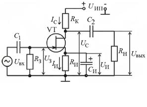Задание 3: Исследовать основные характеристики и параметры усилительного каскада на полевом транзисторе с ОИ, рабочая точка которого задается схемой автосмещения. 3.1. Собрать усилительный каскад по схеме, приведенной на рис. 14. Установить напряжение питания усилителя UИП = 10 В.
Рис.
14. Схема с усилительным каскадом . 3.3. Подключить измеритель-ные приборы (генератор низко-частотных сигналов, осциллограф) согласно схеме, приведенной на рис. 13. Используя методику, предложенную в подразд. 1.3, экспериментально исследовать АХ усилителя для синусоидального входного сигнала частотой f = 1 кГц для двух значений сопротивления нагрузки: а) RН = ∞ (режим ХХ); б) RН = 1 кОм. Рассчитать коэффициент усиления по напряжению для линейного участка АХ и определить динамический диапазон усилителя с различной нагрузкой. Сравнить полученные результаты. Как влияет изменение сопротивления нагрузки на коэффициент усиления по напряжению и динамический диапазон усилителя? 3.4. Используя методику, предложенную в подразд. 1.3, экспериментально исследовать АЧХ усилителя для двух значений емкости разделительного конденсатора C2: а) C2 = 10 мкФ; б) C2 = 4,7 мкФ. 3.5. Определить полосу пропускания усилителя. Сравнить полученные результаты. Как влияет изменение емкости разделительного конденсатора на АЧХ усилителя? 3.6. Подключить измерительные приборы (генератор низкочастотных сигналов, осциллограф) согласно схеме на рис. 13. Используя методику, предложенную в подразд. 1.3, измерить входное Rвх и выходное Rвых сопротивления усилителя на частоте входного сигнала f = 1 кГц, установив амплитуду входного сигнала Uвх, соответствующую линейному участку АХ. 5. Приборы и оборудование
Программа компьютерного моделирование электронных схем Multisim: 6. Содержание отчета 1. Цель работы. 2. Принципиальные схемы исследуемых усилительных каскадов. 3. Схемы измерительных установок. 4. Результаты исследования каскадов по постоянному току. 5. Табличные и графические результаты исследования АХ каскадов. 6. Табличные и графические результаты исследования АЧХ каскадов. 7. Сводная таблица с результатами измерений входных и выходных сопротивлений каскадов. 8. Анализ полученных результатов: влияние сопротивления нагрузки и емкости разделительных конденсаторов на параметры и характеристики усилителей; сравнение входных и выходных сопротивлений исследованных каскадов.
7. Контрольные вопросы
1. Амплитудная характеристика и методика ее измерения. 2. Амплитудно-частотная характеристика и методика ее измерения. 3. Входное и выходное сопротивления и методика их измерений. 4. Динамический диапазон усилителя и способ его определения. 5. Покажите пути прохождения постоянных токов в схемах с фиксиро-ванным током базы и эмиттерной стабилизацией. 6. Покажите на входных и выходных характеристиках транзистора, как располагается рабочая точка по постоянному току в различных режимах работы. 7. Объясните принцип действия эмиттерной стабилизации режима работы по постоянному току. 8. Как влияет уменьшение сопротивления нагрузки каскада на его коэффициент усиления по напряжению? 9. Как влияет увеличение емкости разделительного конденсатора на АЧХ усилителя? 10. Поясните принцип работы усилителя на БТ. 11. Какие параметры БТ определяют коэффициент усиления по мощности малосигнального усилителя?
|
| (С) БГУИР |